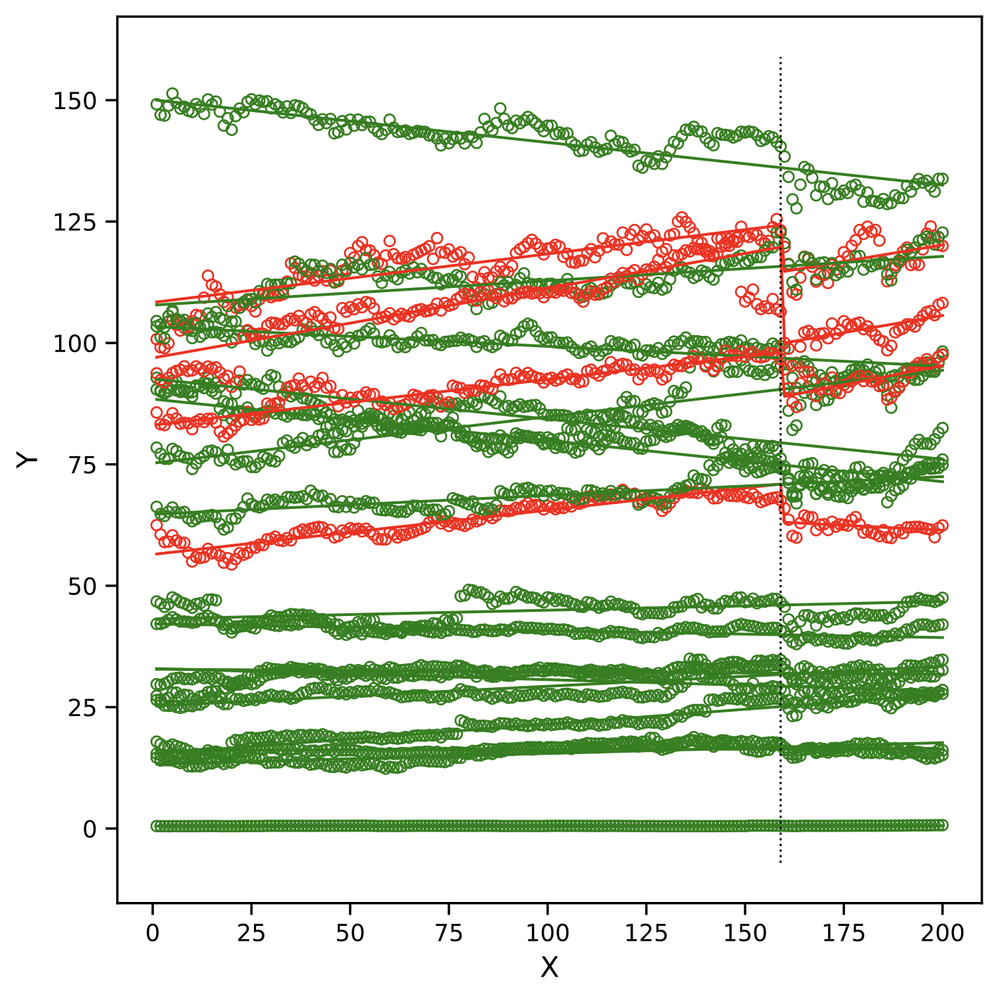
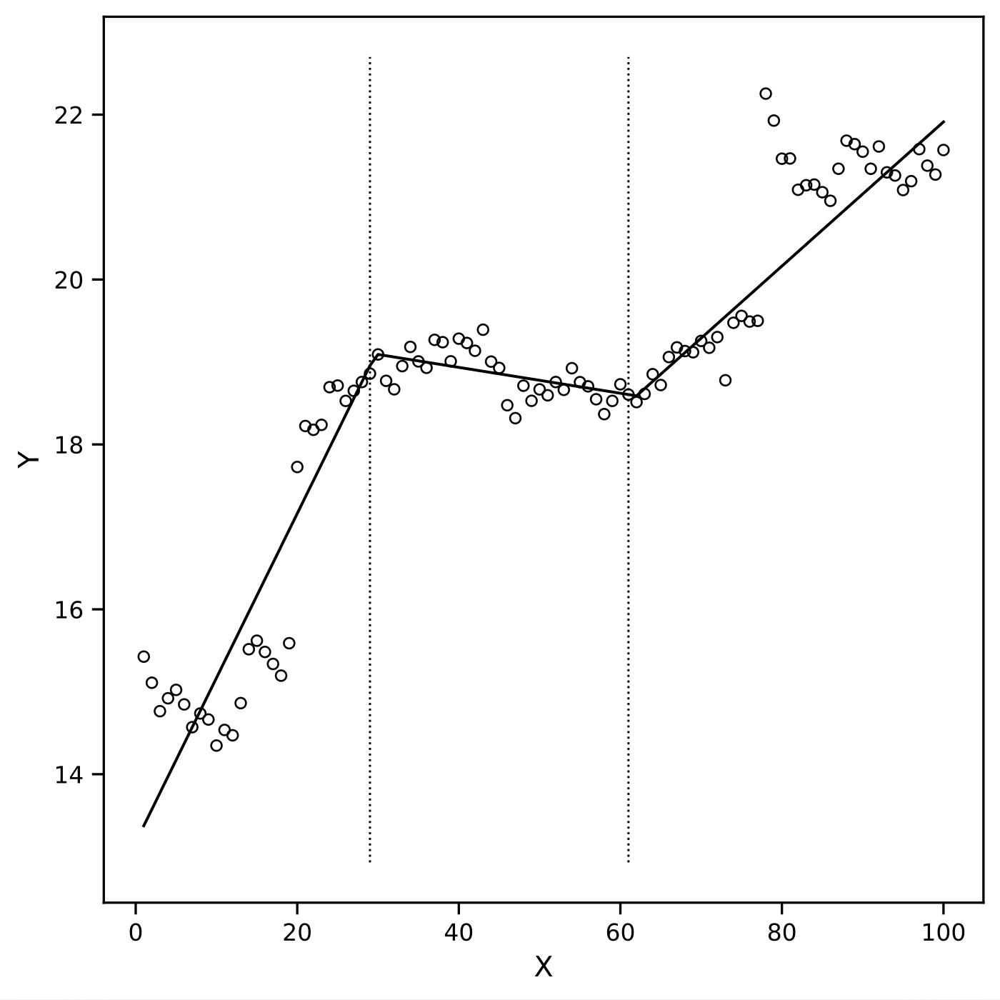

February, 2026
Apoorva Narula, Santanu S. Dey, and Yao Xie.
This work develops scalable mixed integer programming formulations for statistical change-point detection by performing contiguous domain partitioning using extended variable representations.

